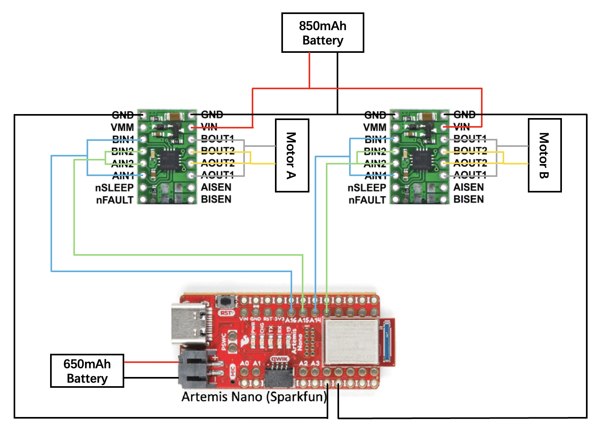
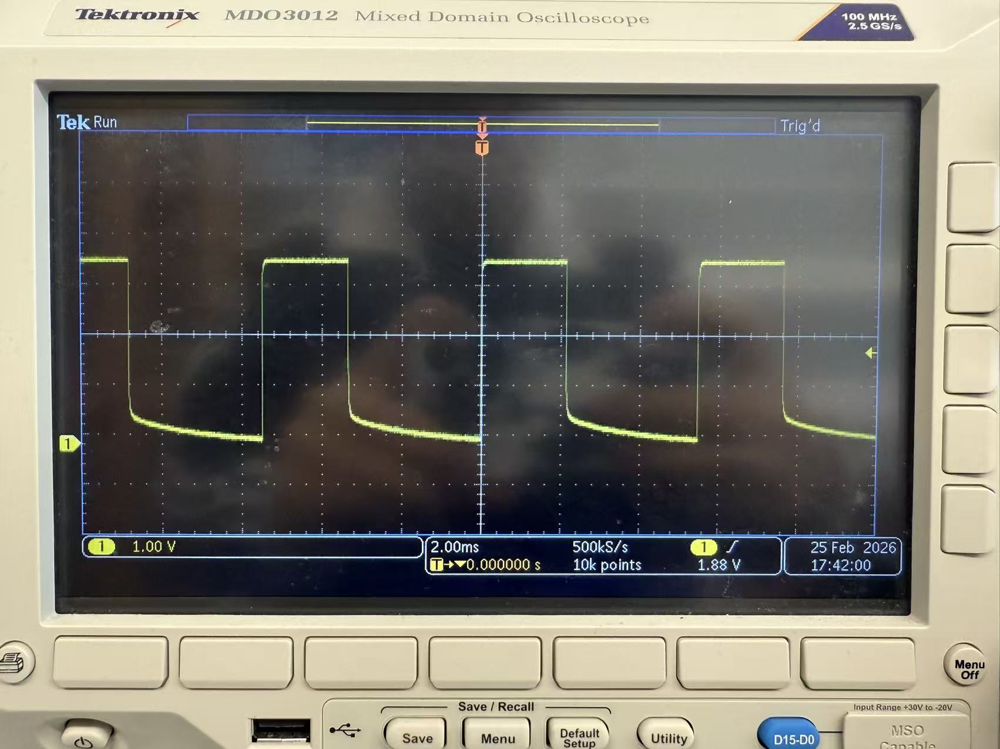
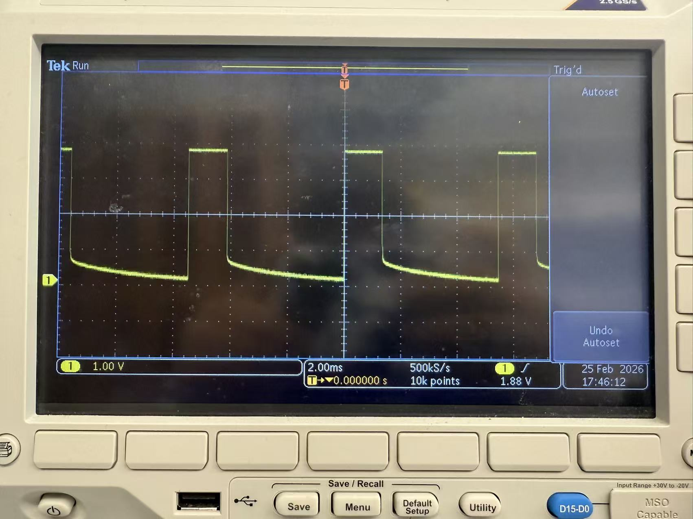
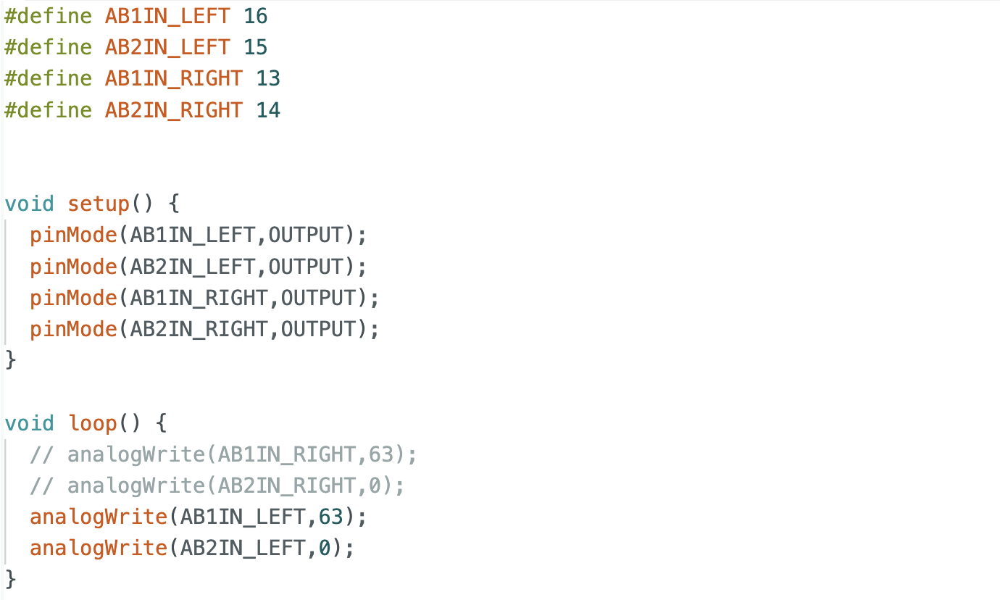
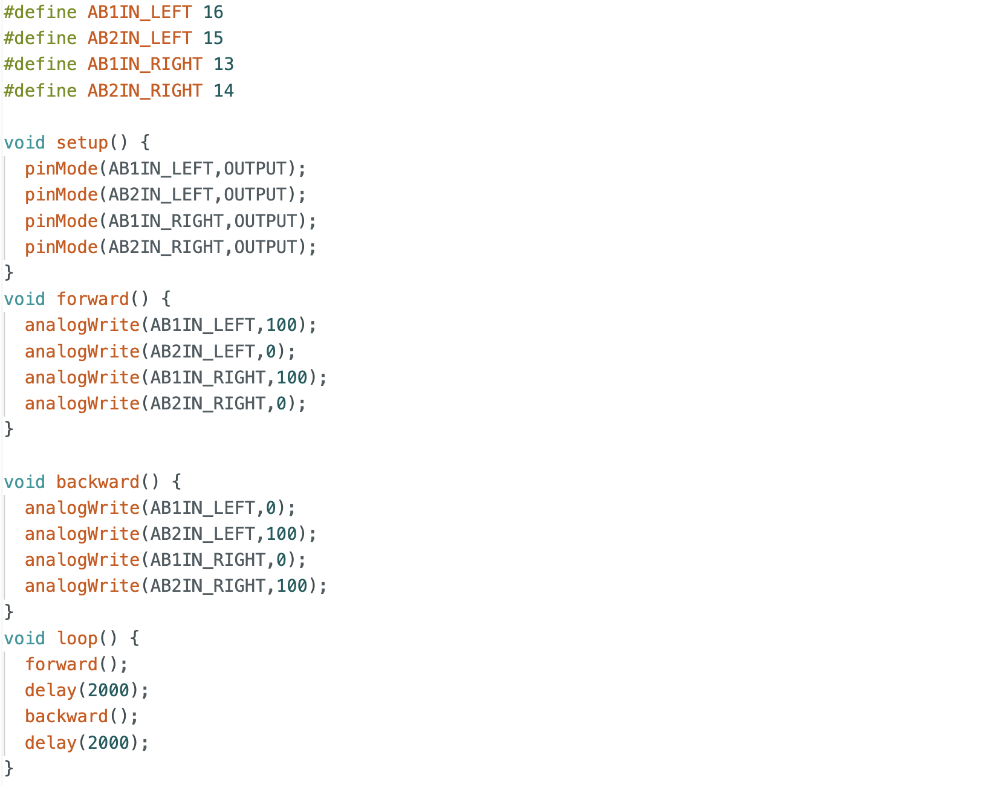
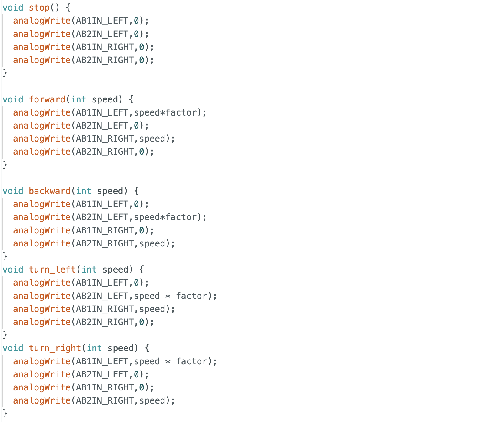
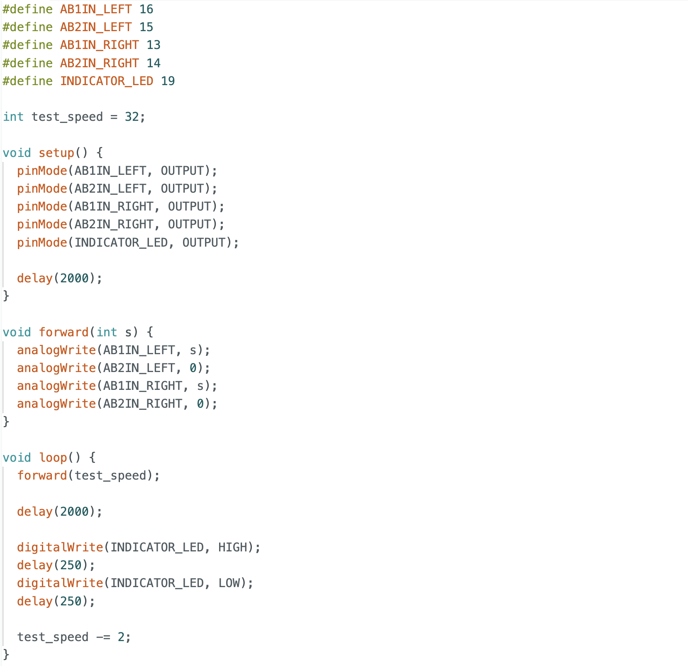

Lab 4 Overview
The purpose of this lab is for us to change from manual to open loop control of the car. At the end of this lab, our car should be able to execute a pre-programmed series of moves, using the Artemis board and two dual motor drivers.
Prelab
Wiring diagram
The wiring diagram for the motor driver connection is shown below. Separate batteries are used for the Artemis board and the motor driver.

Battery discussion
Two batteries are used in this lab because the motor driver and the microcontroller require independent power supplies with separate ground references to ensure stable operation and protect the sensors. During operation, the motors introduce noise that can cause voltage and current fluctuations. Using separate batteries provides a stable working environment for the Artemis while also ensuring relatively stable output power for the motors.
Lab Tasks
Oscilloscope testing
Before soldering the motor driver to the motors, I tested the signal output of the driver using an oscilloscope. An external power supply was connected to the VIN and GND pins of the motor driver, while the Artemis board was connected to the computer. PWM signals were generated using commands such as analogWrite(AB1IN_RIGHT, 60) and analogWrite(AB2IN_RIGHT, 0). The output waveforms were observed on the oscilloscope. I tested PWM values of 63 and 100. The results show that a value of 63 corresponds to a 25% duty cycle, and the duty cycle at 100 also matches the expectation.


Wheels spinning
The motor driver output pins were then connected to the motors, and PWM signals were applied to drive the motors, successfully achieving wheel spinning.

All components arrangement
After completing the overall wiring, I arranged all the components on the robot.

Both wheels spinning
Both motors were powered using a battery and tested to rotate simultaneously. A video demonstrating this behavior is shown below.

Lower limit PWM value
In this section, I tested the minimum PWM value required to move the robot. Due to static friction at startup, a higher PWM value is required to initiate motion. Through testing, I found that a PWM value of 30 allows the robot to start moving. When smaller initial values were used, the robot couldn't start from rest.
The code is similar to the one used for both wheels spinning, but with a loop that decreases the PWM value to find the threshold for motion, which is 30 in this case.
Calibration
During initial testing, the robot didn't move in a straight line when commanded to move forward and instead drifted to the left. This indicates that the right wheel rotates faster than the left wheel. A scaling factor was introduced to adjust the PWM value of the left motor. After tuning this factor, the robot was able to move forward in a straight line.
Code in open loop control contained the calibration factor for the motors.
Open loop control
Four open-loop motions were tested: forward, backward, left turn, and right turn. As shown in the video, the robot successfully performed all motions. It was observed that higher PWM values were required for left and right turns compared to forward and backward motion. This is likely due to increased friction during turning compared to straight-line motion.

Additional tasks for 5000-level
analogWrite frequency
From the oscilloscope measurements, the frequency generated by analogWrite was observed. The time interval between signals is approximately 5 ms, corresponding to a frequency of about 200 Hz. A frequency of 200 Hz is relatively low for DC motors and may result in insufficient torque during turning. Increasing the PWM frequency could produce smoother signals and overcome static friction during turning. However, in this lab, the PWM frequency was not manually adjusted, and the default frequency still produced acceptable results.
Lowest PWM value speed
Unlike the above case, the static friction during startup is greater than the friction during motion. The PWM value was initially set to 32 and then decreased by 2 each time, with an LED blinking to indicate each decrement. After four LED blinks, the robot stopped moving. Therefore, the minimum PWM value required to maintain motion was determined to be 24.

Reference
Thanks to Professor Helbling and the TAs for their help during lab sessions. I refer to Wenyi Fu's website as guidance and as references for web design. I used Nano Banana Pro to help me with generating the cover of my lab, which is shown in the home page.
Note
In the report, I did not put some code implementations of simple functions and roughly duplicate parts. If necessary, please feel free to contact me.